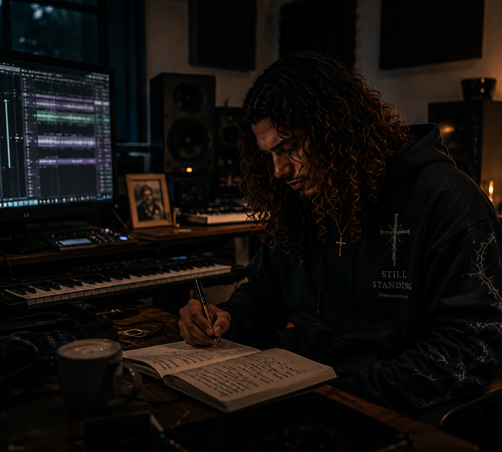

Behind the music
Every song begins with something real.
Ashan Levi was created for people fighting battles they rarely speak about.
The songs explore anxiety, grief, loneliness, spiritual warfare, surrender, and redemption without pretending faith removes every struggle.
Why the music exists
This project began with a simple mission: create the kind of Christian music that could sit honestly beside someone in a dark room. Music that does not shame the struggle, minimize the pain, or rush toward an easy answer.
The goal is not to make darkness look beautiful. The goal is to remind people that darkness is not the end of the story.
Human writing. AI-assisted creation.
Every lyric is written and shaped by the person behind Ashan Levi. AI is used as a creative tool to help bring the vocals, imagery, and production world to life.
The message, editing, emotional direction, and purpose remain deeply personal and intentional.
Faith in the tension
These songs are not written from a place of having every answer. They are written from the place where faith and fear sometimes exist in the same breath.
“Ready for the next step—not every step after that.”